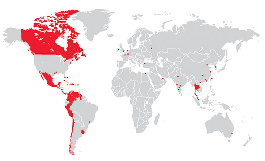
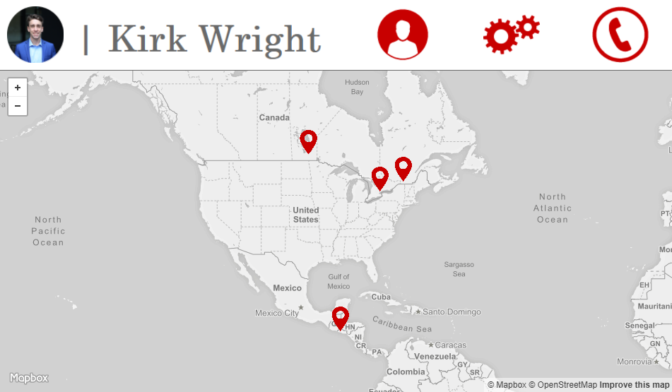
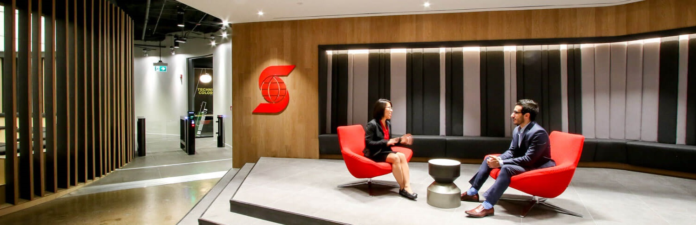

To Whom It May Concern,
I write to express my interest in joining Scotiabank as an Associate Product Owner in September, 2018. I had an outstanding experience this past summer working for Scotiabank in Toronto as an intern on the Academic Partnerships team, and I would love to return to the bank in such an exciting new role. I firmly believe in the path that Scotiabank is following to change the way we bank. My passions lie at the intersection of technology and people, and my skills and experience would make me an impactful member of the team you are building.
Note: Scotiabank and Digital Factory logos are owned by the Bank of Nova Scotia.
I helped manage a variety of projects on the Academic Partnerships team, but the most fascinating part of my job was overseeing research agreements with universities as well as other partners like NextAI and CDL Rotman. These relationships are hugely beneficial in helping us solve complex business problems. I noticed that the limiting factor in this process was not a lack of valuable research outcomes, but rather an insufficient level of coordinated focus on implementation. An Associate Product Owner is tasked with widening this bottleneck and driving innovative projects to implementation. This is no small task in such a large organization with well-entrenched methods, but it is absolutely key in an industry that is constantly evolving. I admire the steps that Scotiabank is taking to address the changing landscape, and I am enthusiastic about joining the process.
Note: Scotiabank and Digital Factory logos are owned by the Bank of Nova Scotia.

I am a strong supporter of Scotiabank strengthening ties with Chile, Colombia, Mexico and Peru. Latin America shows a great deal of potential for growth due to its increasing mobile culture as well as their largely underbanked population, and the Pacific Alliance Countries are at the heart of this trend. I spent the summer of 2016 in coastal El Salvador implementing the pilot for a community indicator system. The opportunity to work in Scotiabank's PAC Digital Factory locations is truly unique, as it allows me to satisfy both my passion for linking technology and people as well as to continue contributing to innovation in Latin America.
Note: Map image is the property of Scotiabank.

From a technical standpoint, I have a strong foundational proficiency in programming with a specialization in statistical programming and econometrics. I have also developed the ability to learn technical skills quickly while pursuing a minor in Computer Science and experimenting with personal projects. I've recently been working on design as well as front-end web development (I made this page from scratch!). I have already contributed in a relationship management role at Scotiabank, and I know that I could be more impactful if I am in a role that leverages my technical skills. What's more, I didn't get a chance to speak Spanish at work this summer. My values and mix of skills position me well to be an effective Associate Product Owner with Scotiabank.

I would deeply appreciate the opportunity to meet to discuss the role in more detail and chat about what is going on at the Digital Factory. I am also keen to share more about my experiences and discuss why I would be a good fit for the position. I look forward to hearing from you!
Sincerely,
Kirk Wright
Note: Banner image owned by Techvibes.